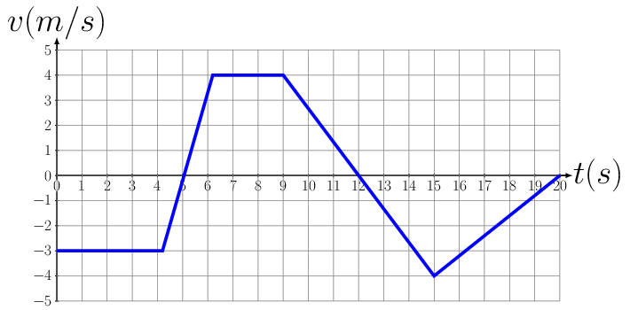

Given the \(v \thicksim t\) curve as shown below, produce \(x \thicksim t\) and \(a \thicksim t\) graphs.

2.
Given \(x(t) = 4 t - 2 t^{2}\text{,}\) where all units are in the MKS system. Find each of the following:
x(3s),
v,
v(-2s),
a, and
a(1s).
3.
A particle moves according to the equation \(x(t) = 4\text{,}\) where all units are in the MKS system. Find each of the following:
x(4),
v,
v(4),
a, and
a(9).
4.
A particle starts out at \(x = 0\) and moves according to the equation \(v(t) = 6 t^{2}\) where all units are in the MKS system. Find each of the following:
x(2),
v,
v(4),
a, and
a(5).
5.
A ball is rolled up an inclined plane and returns to its starting point at the bottom of the plane in 4 s. If the ball travels a total distance up the plane of 1.5 m, what was
its initial speed and
acceleration?
Express the acceleration in units of g?
6.
During an air show, a jet aircraft passes the spectators who see the lights of its afterburners ignited 4 seconds later. One second after that, they hear the blast from the ignition. If the speed of sound is 345 m/s,
how fast was the jet traveling before turning on its afterburners?
If the jet accelerates with the afterburners at a constant \(2 g's\text{,}\) how long (after igniting the afterburners) will it take for the jet to break the sound barrier?
7.
A car traveling at a constant speed of 10 m/s passes a policeman who is at rest and unseen. The car continues on a distance of 50 meters and then runs a red light. If it takes an additional 5 seconds for the policeman to start his motorcycle in order to pursue the law breaker and if he accelerates at a rate of one-quarter g,
how long after starting out does it take for the policeman to overtake the car?
How far does the policeman travel before overtaking the car?
How fast will the policeman be moving when he gets to the car ?
8.
A man has a row boat which he can row at a steady speed of 3 kmh in calm water traveling on the average a distance of 2 m with every stroke of the oars. He decides to use the boat to cross a river 100 m wide flowing at 1 kmh and traveling straight to a point 200 m up stream of his starting point.
How long will it take him to reach his destination?
How many strokes will he have to make in order to get to his destination ?
9.
A river is flowing due east with a speed \(3 m/s.\) A swimmer can swim in still water at a speed of \(4 m/s\text{.}\)
If swimmer, starts swimming due north, what will be his resultant velocity?
If he wants to start from point A on south bank and reach opposite point B on north bank,
which direction should he swim ?
what will be his resultant speed ?
10.
The engine of a boat drives it across a river that is 1800 m wide. The velocity \(v_{bw}\) of the boat relative to the water is 4.0 m/s, directed perpendicular to the current. The velocity \(v_{ws}\) of the water relative to the shore is 2.0 m/s.
What is the velocity \(v_{bs}\) of the boat relative to the shore?
How long does it take for the boat to cross the river?
11.
A bucket is left out in the rain. The rain is coming down at 5 m/s. If a crosswind starts to blow at 2 m/s, will the bucket fill faster or slower?
12.
A train is traveling relative to the ground at 15 m/s and car is traveling relative to the train is 20 m/s, find the velocity of car with respect to ground. If the car were traveling to left with velocity of 20m/s with respect to train. Find \(v_{cg}\text{?}\)
13.
A race car starts from rest and accelerates at \(a = 5 + 2t m/s^{2}\) for 10 seconds. The brakes are then applied, and the car has a constant acceleration \(a = -30 m/s^{2}\) until it comes to rest. Determine
the maximum velocity,
the total distance traveled;
the total time of travel.
14.
The car is traveling at 48 km/h when the traffic light 90 m ahead turns yellow. The driver takes 1 s to react before he applies the accelerator. If the car has a constant acceleration of \(2 m/s^{2}\) and the light remains yellow for 5 s, will the car reach the light before it turns red? How fast is the car moving when it reaches the light?
15.
The rocket starts from rest at t = 0 and travels straight up. Its height above the ground as a function of time can be approximated by \(s = bt^{2}+ ct^{3}\text{,}\) where b and c are constants. At \(t = 10 s\text{,}\) the rocket’s velocity and acceleration are \(v = 229 m/s\) and \(a = 28.2m/s^{2}\text{.}\) Determine the time at which the rocket reaches supersonic speed (325 m/s) and the altitude at that time.
16.
The boat is moving at 10 m/s when its engine is shut down. Due to hydrodynamic drag, its subsequent acceleration is \(a = -0.05v^{2} m/s^{2}\text{,}\) where v is the velocity of the boat in m/s. What is the boat’s velocity 4 s after the engine is shut down?
17.
A stone is thrown vertically upward from a bridge 30.0 m high at an initial velocity of 15.0 m/s. How long will it take for the stone to hit the water below?
18.
A body moves in the x-direction with an acceleration given by \(a = (2.5 m/s^{3})t + (1.55 m/s^{3})t^{2}\text{.}\) Find the equations for the velocity and displacement of the moving body at any time t. The body starts from rest at \(x_{o} = 0\text{.}\) Find the numerical values of the velocity, displacement, and acceleration at t = 5.00s.
19.
A block slides down a smooth inclined plane that makes an angle of \(25^{o}\) with the horizontal. Find the acceleration of the block. If the plane is 10.0 meters long and the block starts from rest, what is its velocity at the bottom of the plane? How long does it take for the block to get to the bottom?
At the instant that the traffic light turns green, a car starting from rest with an acceleration of \(2.50 m/s^{2}\) is passed by a truck moving at a constant velocity of 60.0 km/hr.
How long will it take for the car to overtake the truck?
How far from the starting point will the car overtake the truck?
At what velocity will the car be moving when it overtakes the truck?
21.
Find the distance covered by a particle in its time period \(T\text{.}\) If the position vector of the particle is given by